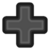
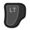
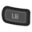
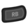
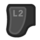
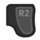
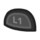
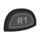
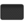
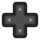

Controles
Ir a la navegación
Ir a la búsqueda
| Guía de Inicio |
El Jugador | Opciones | Controles | Controles Móviles |
Salud | Energía | Habilidades | Ciclo Diario |
Todos los controles se pueden re-asignar desde el menú, en la pestaña de Opciones. 
Teclado y Mouse
| Key | Description |
|---|---|
| W A S D |
W Mueve hacia arriba A Mueve hacia izquierda S Mueve hacia abajo D Mueve hacia derecha |
| , C | Usar una herramienta o colocar un objeto |
| , X | Checar/Realizar acción |
| Escape, E | Abrir Menú |
| F | Abrir Diario |
| M | Abrir Mapa |
| Y | Abrir Barra de Emoticones |
| Intercambiar objetos | |
| Tab | Intercambiar barra de Inventario |
| Shift Izquierdo | Correr/Caminar |
| ?, T | Abrir Chat |
| 1 - 0, - , + | Atajos de Inventario (Casillas) |
| F4 | Captura de Pantalla |
Emoticones
- Ver también: Multijugador/Emotes
Los siguientes emoticones están disponibles pulsando Y:
Consejos
- Shift +
 en un artículo del inventario/pila para moverlo a la fila superior.
en un artículo del inventario/pila para moverlo a la fila superior. - Shift + para comprar continuamente artículos dentro de la interfaz de inventario de una tienda/comerciante.
- Shift + para elaborar 5 objetos a la vez dentro del menú de elaboración.
- Mantén Control + Shift para elaborar una pila de 25 objetos a la vez.
 para comprar 5 objetos. Mantén presionado Shift + para seguir comprando artículos de 5 en 5.
para comprar 5 objetos. Mantén presionado Shift + para seguir comprando artículos de 5 en 5.
- Mantén Control + Shift para comprar una pila de 25 objetos a la vez.
- en una pila de artículos del inventario/cofre para seleccionar uno de ellos.
- Shift + para seleccionar la mitad de una pila de artículos del inventario/cofre.
- Mantén presionado o mientras se mueve el ratón sobre un grupo de equipos. (Ej: Barriles, Envasadoras, Toneles, Colmenas) para recolectar objetos rápidamente.
- Tener otro artículo seleccionado en el inventario rellena el equipo automáticamente.
- Si el artículo es comestible, debes utilizar , o el juego te preguntará si quieres consumir el objeto.
- Supr para eliminar permanentemente un objeto seleccionado en la ventana del inventario. (Utiliza E/Escape para abrir el inventario, luego haz clic con el botón izquierdo del ratón en un objeto/pila para seleccionarlo y luego pulsa la tecla de borrar).
- Presionar la tecla Esc mientras estás en la pantalla de inicio te lleva directamente a la pantalla de selección del menú principal.
- Cuando veas el cuadro de diálogo "¿Quieres comer <objeto>?", pulsando E/Escape se cerrará el cuadro de diálogo sin comer el objeto, y pulsando la tecla "Y" se comerá el objeto.
- Shift + Click-izquierdo en un artículo en el Catálogo o Catálogo de muebles para añadirlo directamente al inventario, en lugar de adjuntarlo al cursor del ratón. Esto también funciona cuando se quita objetos en el Puesto de Exhibición en la Feria de Stardew Valley.
- Reencuadra la tecla de la caja de chat para evitar abrirla accidentalmente, o entra temporalmente en el modo de captura de pantalla con F4 para colocar los objetos en la parte inferior izquierda de la pantalla.
Joystick Xbox One / Xbox 360
Los controles no pueden ser reasignados.
En Partida
| Botón | Descripción |
|---|---|
Joystick Izquierdo |
Caminar; Correr |
|  POV |
Caminar |
Joystick Derecho |
Mueve el cursor; Abre el chat de juego (Click) |
Start (X360) |
Abre el Menú |
Volver (X360) Vista (XONE) |
Abre el Diario |
| A | Revisar / Hacer una acción / Usar el cursor |
| X | Usar una Herramienta |
| B | Abrir el Menú |
| Y | Abrir el menú de Creación |
| LT RT | Intercambiar objetos |
| LB RB | Cambiar la Barra de Herramientas |
En Menú
| Botón | Descripción |
|---|---|
Joystick Izquierdo |
Mover Cursor |
Joystick Derecho |
Desplazarse |
| Seleccionar | |
Start Menu |
Salir del Menú |
| Cambiar Pestaña del Menú | |
| Mover Un Objeto / Usar Objeto (cebo, etc.) |
Mapa de Joystick
Joystick PS4
Los controles se pueden reasignar en todo el sistema en Configuración > Accesibilidad > Asignaciones de botones.
En partida
| Botón | Descripción |
|---|---|
Joystick Izquierdo |
Caminar; Correr |
BDD |
Caminar |
Joystick Derecho |
Mover el cursor; Abrir chat en el juego (hacer clic en) |
Opciones |
Abrir Menú |
Panel Táctil |
Abrir Diario |
Cruz |
Comprobar / Hacer acción / Usar cursor |
Cuadrado |
Usar Herramienta |
Circulo |
Abrir Menú |
Triángulo |
Abrir Menú De Elaboración |
| L2 R2 | Cambiar De Objeto |
| L1 R1 | Cambiar Barra De Herramientas |
En Menú
| Botón | Descripción |
|---|---|
Joystick Izquierdo |
Mover Cursor |
Joystick Derecho |
Desplazarse |
Cruz |
Seleccionar |
Opciones |
Salir Del Menú |
| L2 R2 | Cambiar De Menu |
Cuadrado |
Mover un artículo / Usar artículo (cebo, etc.) |
Mapa de Joystick
Controles avanzados
- Cuando compre artículos al por mayor, mantenga pulsados
 y
y  para acelerar el proceso de compra.
para acelerar el proceso de compra. - Con el menú de inventario abierto, pulsa el  botón del panel táctil para ordenar automáticamente los objetos.
- Si pulsas el
 después de seleccionar un objeto de tu inventario, lo moverás al icono de la papelera.
después de seleccionar un objeto de tu inventario, lo moverás al icono de la papelera.
Joystick Switch
Los botones del controlador se pueden reasignar en todo el sistema en Configuración del Sistema > Controladores y Sensores > Cambiar Asignación de Botones.
En Partida
| Botón | Descripción |
|---|---|
Joystick Izquierdo |
Caminar; Correr |
|  POV |
Caminar |
Joystick Derecho |
Mover el cursor; Abrir chat en el juego (hacer clic en) |
+ Botón |
Abrir Menú |
- Botón |
Abrir Diario |
| A | Comprobar / Hacer acción / Usar cursor |
| Y | Usar Herramienta |
| B | Abrir Menú |
| X | Abrir Menú De Elaboración |
| ZL ZR | Cambiar artículo |
| L R | Cambiar Barra De Herramientas |
En Menú
| Botón | Descripción |
|---|---|
Joystick Izquierdo |
Mover Cursor |
Joystick Derecho |
Desplazarse |
| A | Seleccionar |
| B X + Botón |
Salir Del Menú |
| ZL ZR | Cambiar De Menú |
| Y | Mover un artículo / Usar artículo (cebo, etc.) |
Mapa de Joystick
Consejos para la disposición de objetos
- Uno de los controles más útiles es el Stick derecho. Se puede utilizar para colocar exactamente los muebles, las alfombras, las ventanas, etc., donde quieras. Es bastante sensible pero absolutamente necesario sobre todo para colocar ventanas.
- Mientras mueves una alfombra a su lugar usando el Stick derecho, usa
 para rotar la alfombra.
para rotar la alfombra.
Consejos para Barra de Herramientas
- Para "potenciar" herramientas como la Regadera (es decir, actuar sobre varias casillas a la vez), mantén pulsado
 .
. - Al interactuar con los aldeanos con cualquier objeto que no sea una herramienta, se le regalará ese objeto al aldeano.
Consejos para Inventario
- Al mover el inventario, el botón moverá un elemento a la vez y si se mantiene pulsado, moverá varios.
- Si pulsas después de seleccionar un objeto de tu inventario, lo moverás a la papelera.
- Al pulsar mientras estás en tu inventario se organizan rápidamente los objetos.
- Al pulsar tanto como mientras se compran artículos en cualquier tienda, el jugador podrá adquirirlos el doble de rápido.
Armas
- Pulsando realizas el ataque básico mientras que pulsando realizas el bloqueo o el ataque alternativo.
Historial
- 1.4: Se ha eliminado la entrada "nueva" de la pulsación del botón hasta que se suelta. Esto facilita la recolección de un gran número de barriles/tarros de conserva/cristalarios, etc. manteniendo el botón sin soltarlo. Se ha añadido la opción de desplazar la barra de herramientas (barra de inventario activa) al PC. Añadido el menú de emotes.
- 1.5.5: Mantener Control + Shift ahora te permite comprar o elaborar 25 objetos a la vez.